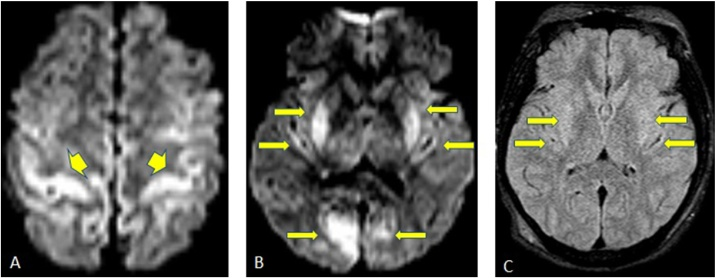
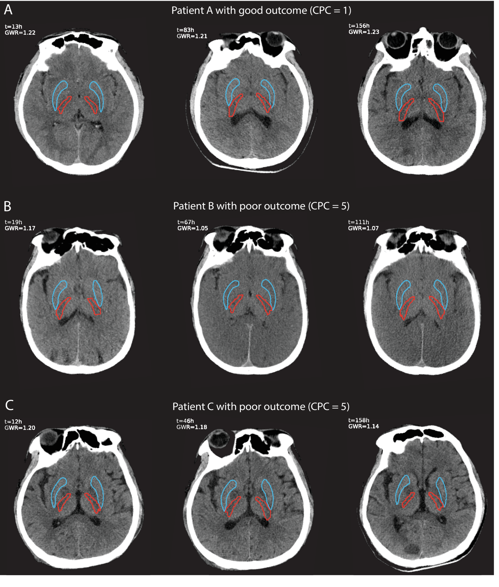
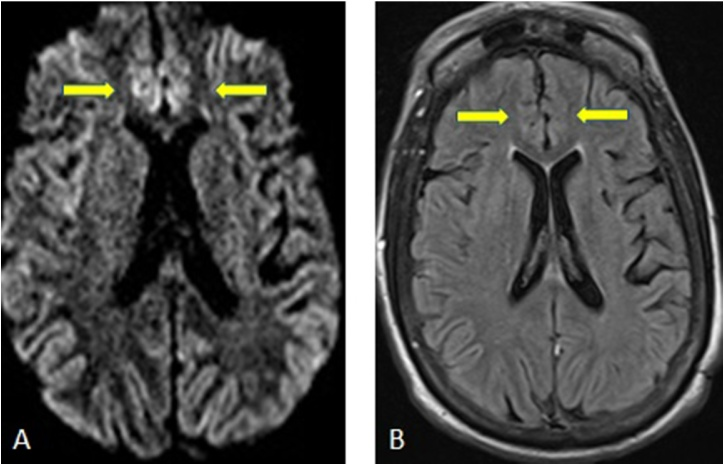

3035 — Bệnh não thiếu oxy–thiếu máu cục bộ (HIE) sau ngừng tim ở người lớn: DWI/ADC, GWR và ngưỡng dự báo 72 giờ
Tags: pattern:han-che-khuếch-tan pattern:vo-nao pattern:hach-nen pattern:phu-doc-te-bao vung:nao score:GWR score:ADC protocol:CT-so-nao protocol:MRI-so-nao protocol:du-bao-sau-ngung-tim
Mức chắc chắn (certainty): tổng hợp y văn (literature synthesis) — ghép nghiên cứu DWI siêu sớm < 6 giờ (PMC9837995), GWR tự động theo thời điểm (PMC12751271), rapid review GWR người lớn–trẻ em (PMC13129448), review tổng hợp khuyến cáo ERC/ESICM 2025 (PMC13038935), thực hành dự báo đa phương thức (PMC13363386), review chẩn đoán phân biệt tổn thương vỏ lan tỏa trên DWI (PMC6231053) và 3 ca có ảnh.
Câu hỏi thực hành: nam 55 tuổi, ngừng tim ngoài bệnh viện, được hồi sinh sau 20 phút, nhập ICU còn hôn mê. Ngày thứ 2 gia đình hỏi “có cứu được không”, người trực định chụp CT rồi kết luận. Câu hỏi: chụp gì, đọc gì, và vì sao chưa được kết luận ở ngày thứ 2? Bài chốt theo ba trục: (1) cơ chế — thiếu ATP làm phù độc tế bào (cytotoxic edema) → ADC tối trong vài phút, trong khi CT/FLAIR còn bình thường; (2) định lượng — DWI/ADC sớm có độ đặc hiệu 100% nhưng độ nhạy chỉ 74,2%, GWR tự động tăng độ chính xác khi chụp sau 24 giờ; (3) dự báo — đa phương thức, ≥ 72 giờ sau ROSC, không dựa một xét nghiệm. Nối 211 – Đột quỵ não, 3033 – Wernicke, 3031 – PRES, 201 – Protocol sọ não.
1. Tổng quan bệnh học – cơ chế hình ảnh: vì sao não ngừng tim lại “sáng” trên DWI trước khi sáng trên CT
- Dòng thác phân tử: ngừng tuần hoàn → thiếu oxy + thiếu glucose → sụp ATP → bơm Na⁺/K⁺-ATPase ngừng hoạt động → Na⁺ và nước vào tế bào → phù độc tế bào (cytotoxic edema). Nước chuyển từ ngoại bào vào nội bào làm khoảng khuếch tán bị thu hẹp → DWI sáng, ADC tối; hiện tượng này xảy ra trong vài phút, trước khi có thay đổi mô học thấy được trên CT.
- Vì sao CT chậm hơn: CT chỉ thấy mất phân biệt xám–trắng khi phù làm giảm tỷ trọng chất xám (bình thường 35–45 HU) xuống gần chất trắng (20–30 HU); phải mất hàng giờ đến vài ngày mới đủ rõ. Vì vậy CT bình thường trong 6 giờ đầu không loại trừ HIE.
- Tế bào nào chết trước (selective vulnerability): lớp III, V, VI vỏ não, CA1 hải mã, tế bào Purkinje tiểu não, hạch nền/đồi thị — nơi có nhu cầu chuyển hóa cao nhất → tổn thương đối xứng, lan theo dải vỏ (cortical ribbon) chứ không theo lãnh thổ mạch.
- Vì sao có “dấu hiệu giả” trên CT:
- Mất phân biệt xám–trắng → tính GWR (gray–white matter ratio) = HU chất xám / HU chất trắng (thường dùng nhân đuôi, nhân bèo, đồi thị / nhánh sau bao trong).
- Pseudosubarachnoid hemorrhage: vỏ não mất tỷ trọng trong khi bể đáy vẫn đậm → trông như chảy máu dưới nhện dù không có máu.
- White cerebellum sign: tiểu não được bảo tồn nên sáng tương đối so với đại não đã phù; reversal sign: đảo ngược tương quan xám–trắng — cả hai là dấu hiệu muộn, tiên lượng rất xấu, không nhạy.
- T1 sáng vỏ não (pseudolaminar necrosis): xuất hiện 1–2 tuần sau, là hoại tử vỏ, không phải xuất huyết — đừng gọi nhầm là máu.
- Ngưỡng định lượng phải nhớ:
- ADC < 650 × 10⁻⁶ mm²/s** là ngưỡng hay dùng để định nghĩa **vùng hạn chế khuếch tán**; tỷ lệ thể tích não dưới ngưỡng (**PV650**) **> 28,8% dự báo kết cục xấu với AUC 0,83, độ nhạy 48,4% ở độ đặc hiệu 100% (PMC9837995).
- Có HSI (high signal intensity) trên DWI/ADC trong 6 giờ đầu: 0/46 ca có kết cục tốt, so với 48/64 (75%) ca không có HSI; AUC 0,87, độ nhạy 74,2%, độ đặc hiệu 100% (PMC9837995).
- GWR tự động: AUC 0,72 (< 24 giờ), 0,78 (24–96 giờ), 0,81 (96–168 giờ), 0,83 khi thêm diễn tiến theo thời gian; GWR giảm dần ở nhóm kết cục xấu sau 24 giờ, ổn định ở nhóm tốt (PMC12751271).
- GWR người lớn: nhóm tốt 1,18–1,35, nhóm xấu 1,06–1,31 — chồng lấp đáng kể, nên không có một ngưỡng tuyệt đối dùng cho mọi ca; trẻ em có GWR thấp hơn, không áp ngưỡng người lớn (PMC13129448).
- DWI siêu sớm trong 6 giờ có thể âm tính vì độ nhạy thấp; MRI lặp 72–96 giờ mới đủ tin cậy (PMC9837995, PMC12751271).
2. Mẫu hình + chẩn đoán phân biệt theo vị trí (gamut)
- Mẫu hình cốt lõi: hôn mê sau ngừng tim + hạn chế khuếch tán đối xứng ở vỏ não và/hoặc hạch nền – đồi thị, không theo lãnh thổ mạch; thường kèm mất phân biệt xám–trắng trên CT.
- Gamut theo vị trí tổn thương:
- Vỏ não lan tỏa (cortical ribboning) — thể hay gặp nhất ở người lớn; DWI sáng dọc bờ vỏ ở nhiều thùy, không theo một động mạch.
- Hạch nền – đồi thị hai bên — tổn thương sâu, tiên lượng xấu hơn; gặp khi ngừng tim kéo dài hoặc ngộ độc CO/cyanide.
- Hải mã — tổn thương nhỏ, dễ bỏ trên lát dày; giải thích di chứng trí nhớ ở người sống.
- Tiểu não — thường được bảo tồn → white cerebellum sign; tổn thương tiểu não đơn độc hiếm và gợi ý nguyên nhân khác (ngộ độc, bệnh chuyển hóa).
- Chất trắng — delayed post-anoxic leukoencephalopathy xuất hiện 1–4 tuần sau hồi phục ban đầu rồi sa sút muộn.
- Phù lan tỏa – mất phân biệt xám–trắng toàn bộ — hình thái gần chết não, cần đánh giá chết não theo quy trình.
- Gamut theo nguyên nhân (khi tổn thương đối xứng): HIE sau ngừng tim · hạ đường huyết · động kinh liên tục · CJD · bệnh não gan · PRES/RCVS · Wernicke · hủy myelin thẩm thấu · ngộ độc CO/cyanide/methanol · bệnh ty thể (MELAS). Bối cảnh + phân bố + xét nghiệm quyết định, không dựa một ổ sáng.

*A: DWI — hạn chế khuếch tán vỏ não vùng quanh trung tâm (perirolandic). B: DWI — hạch nền, vỏ sau đảo và vỏ chẩm hai bên. C: FLAIR — thay đổi rất nhẹ, chứng minh DWI sớm hơn FLAIR. Nguồn: Eur J Radiol Open 2018 (PMC6231053), CC BY-NC-ND 4.0.*3. Bảng so sánh phân biệt (ma trận đối chiếu)
| Thực thể (entity) | Hình ảnh điển hình (CT/MRI) | Chốt vào (rule-in) | Chốt loại (rule-out) | Gợi ý xác nhận |
|---|---|---|---|---|
| HIE sau ngừng tim | DWI sáng/ADC tối đối xứng vỏ não ± hạch nền, hải mã; CT mất phân biệt xám–trắng, GWR thấp; T1 sáng vỏ muộn | Bối cảnh ngừng tim/ROSC + tổn thương đối xứng không theo lãnh thổ + ADC tối | Tổn thương một bên/theo lãnh thổ mạch → nhồi máu; đường huyết thấp → hạ đường huyết | DWI/ADC 72–96 giờ, GWR, NSE, SSEP, EEG |
| Hạ đường huyết | Vỏ não (đỉnh–chẩm, parasagittal) + hạch nền + hải mã hạn chế khuếch tán; đồi thị thường được bảo tồn | Glucose máu thấp lúc hôn mê + tổn thương vỏ/hạch nền hồi phục sau bù glucose | Glucose bình thường + tổn thương đồi thị nổi bật → nghĩ HIE/ngộ độc | Glucose mao mạch/venous, đáp ứng lâm sàng sau bù |
| Động kinh liên tục (status epilepticus) | Hạn chế khuếch tán vỏ theo vùng động kinh, có thể một bên, kèm phù FLAIR; hồi phục sau kiểm soát cơn | EEG có cơn liên tục + tổn thương vỏ khớp vùng ictal | EEG không có cơn + tổn thương đối xứng toàn bộ → không phải SE | EEG khẩn, MRI lặp sau kiểm soát cơn |
| CJD | Cortical ribboning + hạch nền/đồi thị, DWI sáng, teo nhanh; không có bối cảnh ngừng tim | Sa sút nhanh + myoclonus + DWI vỏ/hạch nền + RT-QuIC/14-3-3 | Khởi phát cấp sau ROSC + hồi phục một phần → HIE | EEG, RT-QuIC, MRI lặp 2–4 tuần |
| Bệnh não gan | T1 sáng đối xứng hạch nền (globus pallidus), có thể hạn chế khuếch tán vỏ; không mất phân biệt xám–trắng kiểu HIE | Xơ gan + amoniac cao + rung giật gan bàn tay | T1 không sáng hạch nền + bối cảnh ngừng tim → HIE | Amoniac, chức năng gan, đáp ứng lactulose |
| PRES/RCVS | Phù vận mạch đỉnh–chẩm, FLAIR sáng nhưng ADC tăng (không hạn chế); có thể xuất huyết | Tăng huyết áp/ thuốc ức chế miễn dịch + phù vùng sau, ADC tăng | ADC tối lan tỏa vỏ + bối cảnh ngừng tim → HIE | MRI + MRV; theo dõi huyết áp |
| Wernicke (thiếu thiamin) | Thể vú, đồi thị trong, quanh cống Sylvius đối xứng; DWI hạn chế ở thể cấp | Bối cảnh rượu/dinh dưỡng + thể vú/quanh cống + đáp ứng thiamin | Tổn thương vỏ lan tỏa + hạch nền, không có thể vú → HIE | Thiamin, MRI; không chờ kết quả |
| Hủy myelin thẩm thấu | Cầu não trung tâm hình “thỏi son”; thể ngoài cầu ở đồi thị/hạch nền | Sửa Na⁺ quá nhanh (> 8–10 mmol/L/24 giờ) | Không rối loạn Na⁺ + tổn thương vỏ lan tỏa → HIE | Điện giải đồ, tốc độ sửa Na⁺ |

A: bệnh nhân kết cục tốt — GWR 1,22 → 1,21 → 1,23, giữ phân biệt xám–trắng. B: kết cục xấu — GWR 1,17 → 1,05 → 1,07, mất dần phân biệt. C: kết cục xấu — GWR 1,20 → 1,18 → 1,14; CT lúc 12 giờ còn “bình thường” nhưng đã xấu dần. Nguồn: Crit Care 2025 (PMC12751271), CC BY-NC-ND 4.0.Đọc GWR đúng — ba điều dễ sai
- GWR không phải hằng số: người lớn nhóm tốt 1,18–1,35, nhóm xấu 1,06–1,31 — chồng lấp; trẻ nhỏ thấp hơn nên không áp ngưỡng người lớn (PMC13129448).
- Thời điểm quan trọng hơn con số: cùng một bệnh nhân, GWR giảm thêm sau 24 giờ là dấu hiệu xấu, dù giá trị tuyệt đối chưa “thấp” (PMC12751271).
- Đo tự động ổn định hơn đo tay: đặt ROI nhân bèo/nhánh sau bao trong bằng atlas giúp giảm lệch giữa người đọc (PMC12751271).
4. Protocol chụp + dự báo đa phương thức (hệ phân độ/điểm)
- CT sọ không cản quang: ngay khi nhập viện (loại trừ chảy máu, đánh giá phù, GWR nền) và lặp 24–96 giờ; đo GWR tại nhân bèo/nhánh sau bao trong, ghi giá trị + thời điểm vì AUC tăng theo thời gian (0,72 → 0,81).
- MRI sọ: DWI + ADC (bắt buộc), FLAIR, T1 (tìm hoại tử vỏ muộn), SWI (loại xuất huyết); lát 3–5 mm. Chụp sớm < 6 giờ có thể âm (độ nhạy 74,2%) → lặp 72–96 giờ trước khi kết luận.
- ADC định lượng: ghi ADC vùng tổn thương (× 10⁻⁶ mm²/s) và PV650 nếu phần mềm cho phép; PV650 > 28,8% là ngưỡng dự báo xấu ở độ đặc hiệu 100% (PMC9837995).
- Kiểm soát và điều trị nền (2025 ERC/ESICM):
- Nhiệt độ ≤ 37,5 °C trong 36–72 giờ, không hạ thân nhiệt thường quy 33 °C (TTM2 không thêm lợi ích so với kiểm soát nhiệt độ) (PMC13038935).
- SpO₂ 94–98%, PaCO₂ 35–45 mmHg, MAP 60–65 mmHg (cá thể hóa).
- EEG liên tục, điều trị cơn động kinh, không dùng thuốc chống động kinh dự phòng.
- An thần ngắn, ngừng đủ để đánh giá thần kinh.
- Dự báo đa phương thức — KHÔNG trước 72 giờ sau ROSC, và không dựa một xét nghiệm:
- Lâm sàng: mất phản xạ đồng tử tại ≥ 72 giờ, mất phản xạ giác mạc hai bên tại ≥ 72 giờ, myoclonus/status myoclonus (kết hợp các test khác).
- SSEP: mất đáp ứng vỏ N20 hai bên (có thể ghi từ ≥ 24 giờ, dùng thuốc giãn cơ khi cần).
- NSE: > 60 µg/L tại 48 giờ và/hoặc 72 giờ, lấy serial 24–48–72 giờ; xu hướng tăng càng xấu (PMC13038935).
- EEG: không dùng “mất phản ứng điện thế nền” đơn thuần để dự báo (khuyến cáo chống).
- Hình ảnh: MRI DWI/ADC và CT GWR là bằng chứng bổ trợ, không thay thế lâm sàng/SSEP.
- Tránh tự ứng nghiệm (self-fulfilling prophecy): chỉ bàn giới hạn điều trị khi nhiều phương thức đồng thuận và đã loại yếu tố gây nhiễu (an thần, giãn cơ, hạ thân nhiệt, suy gan/thận, nhiễm trùng). Trong một đơn vị chọn lọc, MRI chỉ được dùng ở 27,8% ca dự báo — khoảng trống thực hành rõ (PMC13363386).
flowchart TD
A[Ngừng tim - ROSC - còn hôn mê] --> B[Kiểm soát nhiệt độ ≤ 37,5°C, oxy và huyết áp theo đích]
B --> C[CT sọ loại trừ chảy máu + GWR nền]
C --> D{≥ 72 giờ sau ROSC và đã loại an thần?}
D -->|Chưa| B
D -->|Rồi| E[Đánh giá đa phương thức: đồng tử, giác mạc, SSEP N20, NSE 48-72h, EEG, MRI DWI/ADC]
E --> F{Các phương thức đồng thuận kết cục xấu?}
F -->|Có| G[Hội chẩn: thảo luận giới hạn điều trị với gia đình]
F -->|Không hoặc lệch nhau| H[Tiếp tục điều trị + MRI/CT lặp; không kết luận sớm]
5. Biến thể bình thường và cạm bẫy
- CT/MRI bình thường trong 6 giờ đầu không loại trừ HIE: DWI sớm chỉ nhạy 74,2%; GWR < 24 giờ AUC 0,72 — phải chụp lặp.
- Hạ đường huyết là kẻ bắt chước nguy hiểm: tổn thương vỏ + hạch nền + hải mã giống HIE nhưng đồi thị thường được bảo tồn và hồi phục sau bù glucose; luôn kiểm glucose trước khi kết luận (PMC6231053).
- Động kinh liên tục: hạn chế khuếch tán một bên/theo vùng, hồi phục sau kiểm soát cơn — cần EEG, đừng gán HIE.
- GWR bị nhiễu bởi: tuổi nhỏ (GWR thấp hơn), thiếu máu, thuốc cản quang, nhồi máu cũ, hạ thân nhiệt; đo một lát dễ sai — dùng atlas/đo lặp.
- “White cerebellum sign” và “reversal sign” là dấu hiệu muộn: không xuất hiện sớm, không dùng để loại trừ; ngược lại, không thấy không có nghĩa là nhẹ.
- T1 sáng vỏ não không phải xuất huyết: đó là hoại tử vỏ giả lớp (pseudolaminar necrosis) xuất hiện 1–2 tuần; đừng mô tả “máu vỏ não”.
- Bẫy “chẩn đoán trước, ngừng điều trị sau”: dự báo sớm < 72 giờ, khi còn an thần/giãn cơ, là nguyên nhân tử vong do quyết định, không phải do bệnh.
- Trẻ em khác người lớn: ngưỡng GWR và mô hình tổn thương không chuyển nguyên — dùng ngưỡng theo tuổi (PMC13129448).
- Sau ngừng tim vẫn có thể có nguyên nhân thứ hai: nhồi máu do huyết khối mạch vành–não, xuất huyết sau can thiệp, CVST — đừng quy mọi tổn thương cho HIE.
6. Tự lượng giá — Blind Quiz ngay trên trang tĩnh
Ca 1 — Nam 42 tuổi, hôn mê sau ngừng tim được hồi sinh. Nhìn 3 ô DWI/FLAIR: mô tả trước.
- Gợi ý lâm sàng: không chấn thương, không dùng thuốc, glucose bình thường.
- Câu hỏi: tổn thương ở những vùng nào? vì sao DWI rõ hơn FLAIR? 3 chẩn đoán phân biệt cần loại?
Bấm để hiện đáp án (findings + chẩn đoán)
- Dấu hiệu: A — hạn chế khuếch tán vỏ não quanh trung tâm; B — hạch nền, vỏ sau đảo, vỏ chẩm hai bên; C — FLAIR gần như bình thường.
- Chẩn đoán: HIE sau ngừng tim — phù độc tế bào làm giảm khuếch tán trước khi phù đủ để đổi tín hiệu FLAIR.
- Phân biệt: hạ đường huyết (bảo tồn đồi thị, glucose thấp), động kinh liên tục (EEG), CJD (khởi phát bán cấp, không bối cảnh ngừng tim).
- Nguồn ảnh: Eur J Radiol Open 2018 (PMC6231053), CC BY-NC-ND 4.0.
Ca 2 — Ba bệnh nhân hôn mê sau ngừng tim, CT lặp 3 lần. Ai sẽ hồi phục? Nhìn GWR trước.
- Câu hỏi: A/B/C khác nhau ở đâu? vì sao CT lúc 12 giờ của C không đủ để tiên lượng? kết luận dựa vào gì?
Bấm để hiện đáp án
- A (CPC 1): GWR 1,22 → 1,21 → 1,23 — ổn định, phân biệt xám–trắng còn rõ.
- B (CPC 5): GWR 1,17 → 1,05 → 1,07 — giảm sau 24 giờ, mất phân biệt rõ dần.
- C (CPC 5): GWR 1,20 → 1,18 → 1,14 — lúc 12 giờ trông còn ổn, nhưng giảm dần; đây là lý do không tiên lượng bằng một CT sớm.
- Kết luận: dùng GWR theo thời gian + đa phương thức ≥ 72 giờ, không dùng một con số.
- Nguồn ảnh: Crit Care 2025 (PMC12751271), CC BY-NC-ND 4.0.
Ca 3 — Nữ 66 tuổi, hôn mê do hạ đường huyết nặng; DWI/FLAIR cho tổn thương vỏ. Vì sao không gọi là HIE?

- Câu hỏi: tổn thương ở đâu? dấu hiệu nào giúp phân biệt với HIE? xử trí đầu tay?
Bấm để hiện đáp án
- Dấu hiệu: A — DWI hạn chế khuếch tán vỏ parasagittal hai bên; B — FLAIR tăng tín hiệu tương ứng.
- Phân biệt: bối cảnh hạ đường huyết + đồi thị được bảo tồn + hồi phục sau bù glucose → tổn thương do hạ đường huyết, không phải HIE.
- Xử trí: bù glucose ngay, theo dõi thần kinh; MRI lặp để đánh giá hồi phục; không dự báo tiên lượng trong 24 giờ đầu.
- Nguồn ảnh: Eur J Radiol Open 2018 (PMC6231053), CC BY-NC-ND 4.0.
Bài liên quan chéo
- 211 – Đột quỵ não: nhồi máu & vùng lãnh thổ mạch
- 3033 – Bệnh não Wernicke & thiếu thiamin
- 3031 – PRES: phù vận mạch đối xứng vùng sau
- 219 – PRES vs RCVS
- 201 – Protocol sọ não
- 3034 – Chảy máu não thất & não úng thủy sau xuất huyết
Không dùng để chẩn đoán độc lập khi chưa có người hướng dẫn.